Demos:
| Name | Funktioniert (Datum des letzten Funktionstests) | In Arbeit | Geplant (Nicht funktionsfähig) | Archiviert (Nicht funktionsfähig) | Link zu Dokumentation | Ticket | Anmerkungen |
|---|---|---|---|---|---|---|---|
| RFID Collaborative Communication Demo | 28.05.15 | RFID Collaborative Communication Demo | |||||
| LED Power Demo | 28.05.15 | LED Power Demo | |||||
| Audio LED Strip Lampe | 28.05.15 | Audio LED-Strip Lampe | |||||
| Smart Teco | 28.05.15 | SmartTeco | #1244 #1241 #1213 #1287 | ||||
| Machine Health Demo | 30.03.15 | Machine Health Demo | #1243 | ||||
| Point and Click Demo | 28.05.15 | Point And Click | Matching mit Offset | ||||
| VDAR Demo | 28.05.15 | VDAR | #1195 | ||||
| Teco Envboard | 28.05.15 | TecoEnvboard | |||||
| bpart | 28.05.15 | bPart | #1228 | ||||
| Augmented Reality Sensors | Px | Augmented Reality Sensors | #958 | ||||
| Knee Guard Demo | Px | Knee Guard Demo | #831 | ||||
| Embedded Business Systems | X | Embedded Business Systems | #1239 | momentan nicht funktionsfähig | |||
| Handy Demo | X | HandyDemo | |||||
| Polytos Demo | X | Polytos Demo | |||||
| Landmarke Demo | X | LandmarkeDemo | |||||
| Dinam Mite | X | DinamMite | |||||
| Haus Demo | X | HausDemo |
Living Lab Demos:
| 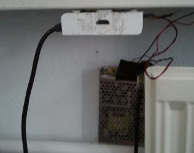 | LED Power Demo: Visualisierung von Heizung und Stromverbrauch Die LED-Demo ist eine Art Demonstrator von Ambient Lighting. Die digitalen LEDs sind in der Umgebung von Heizungen und elektronischen Geräten installiert. Die LED-Beleuchtung mit unterschiedlichen Farben wird als Indikator für den Temperaturstatus einer Heizung oder den Stromverbrauchsstatus eines elektronischen Geräts eingesetzt. Mit diesem Ansatz kann ein Nutzer, der sich in dieser Umgebung befindet, sein Bewusstsein für einen Energieverbrauch schärfen. |

|
Audio LED-Strip: Visualisierung der Umgebungslautstärke Die Audio LED Demo visualisiert die Umgebungslautstärke.
Lampen müssen manuell eingeschaltet werden. Nach dem Einschalten ist mit einer kurzen Verzögerung zu rechnen. |
| 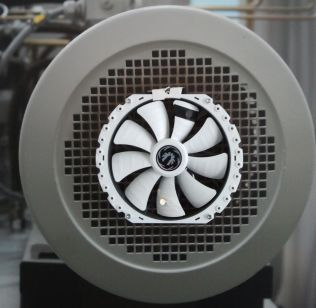 | Machine Health Demo: Predictive Maintenance Die Demo veranschaulicht die Mean Time To Failure eines Lüfters. |
| 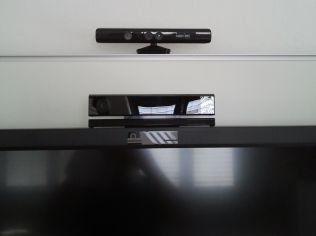 | Point And Click: Interaktive Gerätesteuerung Mit Hilfe der Microsoft Kinect sowie einer passenden App ist es möglich verschiedene Geräte im Living Lab mit Hilfe eines Smartphones zu steuern. |
| 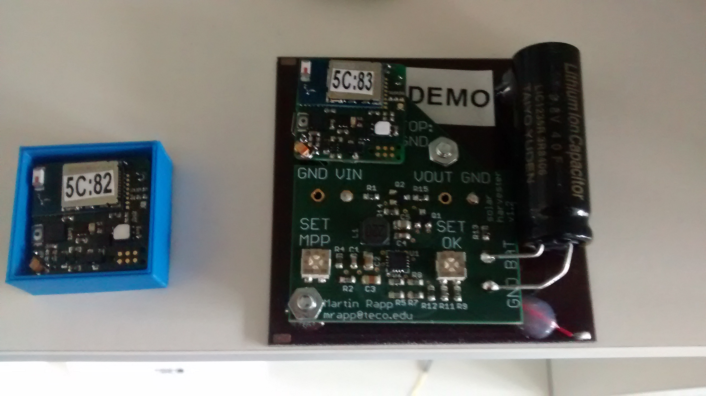 | bPart: Bluetooth LE Particle mit verschiedenen Sensoren, die mit der passenden App ausgelesen werden können |
| VDAR: Dezentrale Energiemärkte Die VDAR Demo zeigt eine Simulationsumgebung des dezentralen Strommarkts. Durch unterschiedliche Szenarien demonstriert das VDAR System ein dynamisches Gleichgewicht zwischen verteiltem Stromnetz und dezentralem Strommarkt. Vom VDAR System sind schließlich fairere Preise für den Endverbraucher und stabile sowie vorhersagbare Betriebskosten für den Versorger zu erwarten. | |
| 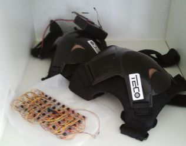 | Knee Guard Demo: Visualisierung von Druckbelastungen im Knie Es handelt sich um eine Demo zu Visualisierung von Druckbelastungen im Knie auf Basis von lokalen Temperaturänderungen auf der Haut. |
| 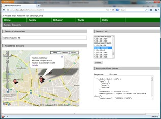 | Smart Teco - Web-basiertes Ressource-Management in einer Büroumgebung. ist eine Web-Plattform zur Verwaltung verschiedener Sensoren und Aktuatoren ausgestattet in TECO. In den TECO-Räumen sind mehrere uParts Sensorknoten installiert, um die Bewegung um oder von Objekten zu ermitteln, die Temperaturen und Beleuchtungszustände zu überwachen. Jede Steckdose ist ausgerüstet mit einer Plugwise Circle für eine echtzeitfähige Energieverbrauchsmessung. Jede Heizung ist steuerbar über einen FHT-Sensor/-Aktuator, der sich als ein drahtloser Temperaturregler bewährt. |

|
Handy Demo: Aktivitätserkennung mit Mobiltelefonen. Der Benutzer sammelt Daten für eine zu erkennende Aktivität und ein maschinelles Lernen identifiziert den Erkenner. Das Training von neuen Erkennern wird von einem Service durchgeführt. Der Benutzer lädt einfach die App herunter, sammelt Daten einiger Aktivitäten und der Service übernimmt diese. Am Ende wird die Benutzeraktivität (z.B. Benutzer läuft, sitzt oder fährt Fahrrad) mittels Sensoren des Mobiltelefons erkannt und auf dem Mobiltelefon sowie dem Rechner angezeigt. |
| 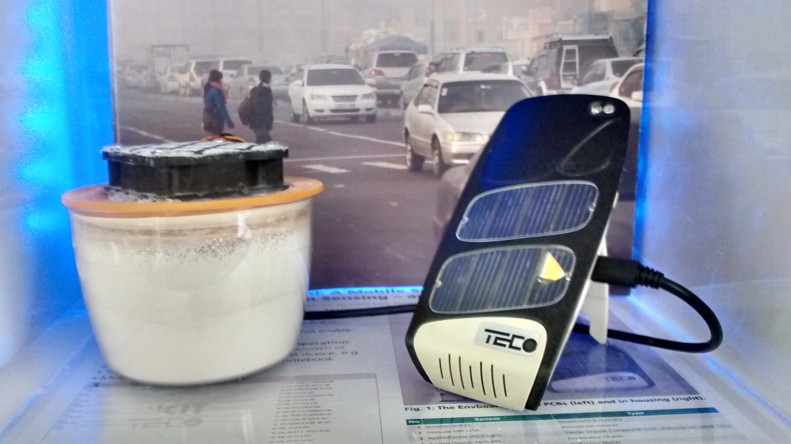 | Teco Envboard - Mobile Sensorplattform zur präzisen Erfassung von (urbanen) Umweltdaten Das ansteigende Interesse der Gesellschaft an der Erfassung städtischer Umweltdaten nimmt immer mehr zu. Neben den Auswirkungen der Umweltverschmutzung auf die menschliche Gesundheit, spielt auch das Wachstum und die Veränderung der Umwelt eine Rolle. Man ist daran interessiert den Veränderungen mit neu definierten Beschränkungen zur Schadstoffreduktion entgegen zu kommen. |
| Polytos Demo: Wall of Text | |

|
Landmarke Demo: Aufbau eines Netzes von Referenzpunkten mit interaktiven Landmarken. Feuerwehrleute müssen in kurzer Zeit eine verlässliche Abschätzung der Einsatzlage abgeben können. Ziel des Landmarke Projekts ist es eine Orientierungs- und Navigationsinfrastruktur zu entwickeln. Diese ermöglicht es unter schlechten Sichtbedingungen den Feuerwehrleuten ein dynamisch wachsendes Ad-hoc Referenzsystem aufzubauen. Die Demo zeigt das Grundprinzip, wie man mit der Hilfe von Software visuelle oder auditive Signale einer bestimmten Landmarke aufrufen und sich dadurch in der Umgebung orientieren kann. |
| 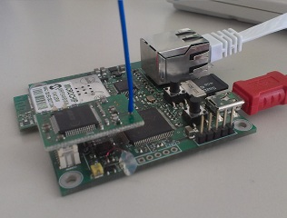 | Dinam Mite: Diese Demonstration zeigt eine in sich geschlossene drahtlose Sensornetzwerk-Entwicklungsumgebung. Die gesamten Tools, wie IDE, Bibliotheken, Code, Daten, Logs, die für Visualisierung und Entwicklung erforderlich sind, befinden sich auf jeden Sensorknoten und sind mit der Hilfe des Web-Interfaces zu erreichen. |
| 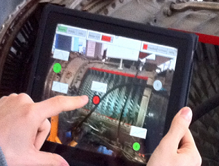 | Augmented Reality Sensors: Tablet-PC, JAVA-basierte Anwendungs-Software und eine USB-Kamera. Diese Demo zeigt, wie eine Kombination aus Leichtbau-Service-Architektur und Augmented Reality (AR) Schnittstellen helfen kann, Daten aus autonomen eingebetteten Systemen vor Ort sammelt, um diese zu analysieren. Die Demo läuft auf einem Tablet-PC mit Windows XP Tablet Edition und einer JAVA-basierten Anwendungs-Software. Um Augmented Reality zu ermöglichen, wird eine USB-Kamera auf die Seite des Displays montiert. Daneben wird das Gateway-Gerät über USB angeschlossen, um den Sensor-Netzwerk Zugriff zu ermöglichen. |

|
Haus Demo: SensorRAUM oder intuitive Benutzeroberflächen für drahtlose Sensornetzwerke. Demo wurde archiviert und wird nicht mehr weitergeführt ! Die gesamte Mission der SensorRAUM Projektes ist benutzerfreundliche und intuitive Benutzeroberflächen für drahtlose Sensornetzwerke zu untersuchen, zu definieren, zu entwickeln und zu demonstrieren. Das Demo besteht aus 2 Modelen von einem Haus: einem virtuellen 3D Modell als ein Simulation auf dem Rechner und einem realen Model aus Holz, wo in jedem Zimmer die Licht- und Temperatursensoren eingebaut wurden. Dabei sind in 3D Model aktuelle "reale" Temperatur und Lichtstärke zu sehen. |
| 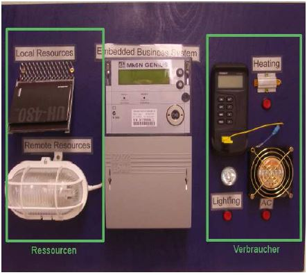 | Embedded Business Systems Demo: Die hier vorgestellte Demo ist ein Embedded Business System für die Energieregelung. Die programmierte Business Unit versucht hierbei, basierend auf einem vom Nutzer gewählten Budget, einen optimalen Energiemix zwischen "externen" Ressourcen und eigener Stromproduktion zu wählen. |
| 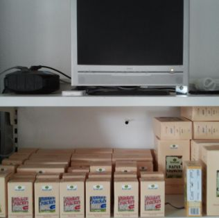 | RFID Collaborative Communication Demo: Temperaturänderungen bei verderblichen Waren Mock-Up eines Systems zur Visualisierung von Temperaturänderungen verderblicher Waren in einem Lagerhaus. |
{kind=link}
{kind=link}
{kind=link}
{kind=link}
{kind=link}
{kind=link}
{kind=link}
{kind=link}
{kind=link}
{kind=link}
{kind=link}
{kind=link}
Slideshow:
Die kontinuierliche Anzeige von Bildern wurde mit der kostenpflichtigen Software gPhotoShow auf dem Shuttle-PC realisiert. Lizenzschlüssel (Key) für gPhotoShow: 000015-21J4YC-8NRYY9-ZY4YB2-PAGW01-38A7UA-F0FTBX-PUE9EB-DH41K5-G600CB
Last modified 4 days ago
Last modified on May 28, 2015 9:43:45 AM
Attachments (23)
- Handy Demo.jpg ( 33.6 KB) - added by sackmann 3 years ago.
- 3D Haus.jpg ( 28.0 KB) - added by sackmann 3 years ago.
- Landmarke Demo.jpg ( 34.3 KB) - added by sackmann 3 years ago.
- envboard.jpg ( 32.8 KB) - added by sackmann 3 years ago.
- ARSensor.png ( 199.3 KB) - added by sackmann 3 years ago.
- dinam-mite.jpg ( 30.4 KB) - added by sackmann 3 years ago.
- devices_new.jpg ( 84.3 KB) - added by ding 2 years ago.
- smartteco.jpg ( 27.1 KB) - added by ding 2 years ago.
- AudioLed.jpg ( 1.5 MB) - added by richardson 15 months ago.
- KneeGuard.jpg ( 1.4 MB) - added by richardson 15 months ago.
- LedPowder.jpg ( 1.5 MB) - added by richardson 15 months ago.
- MachineHealth.jpg ( 1.4 MB) - added by richardson 15 months ago.
- PointAndClick.jpg ( 1.1 MB) - added by richardson 15 months ago.
- RfidCollab.jpg ( 1.3 MB) - added by richardson 15 months ago.
- ThumbAudioLed.jpg ( 9.6 KB) - added by richardson 15 months ago.
- ThumbKneeGuard.jpg ( 10.9 KB) - added by richardson 15 months ago.
- ThumbLedPower.jpg ( 9.0 KB) - added by richardson 15 months ago.
- ThumbMachineHealth.jpg ( 17.7 KB) - added by richardson 15 months ago.
- ThumbPointAndClick.jpg ( 6.1 KB) - added by richardson 15 months ago.
- ThumbRfidCollab.jpg ( 13.5 KB) - added by richardson 15 months ago.
- VDAR_Logo.jpg ( 17.5 KB) - added by ding 13 months ago.
- bParts.jpg ( 1.0 MB) - added by leiner 2 months ago.
- envboard-demo-neu.jpg ( 1.2 MB) - added by leiner 6 weeks ago.
{kind=link}
{kind=link}
{kind=link}
{kind=link}
{kind=link}
{kind=link}
{kind=link}
{kind=link}